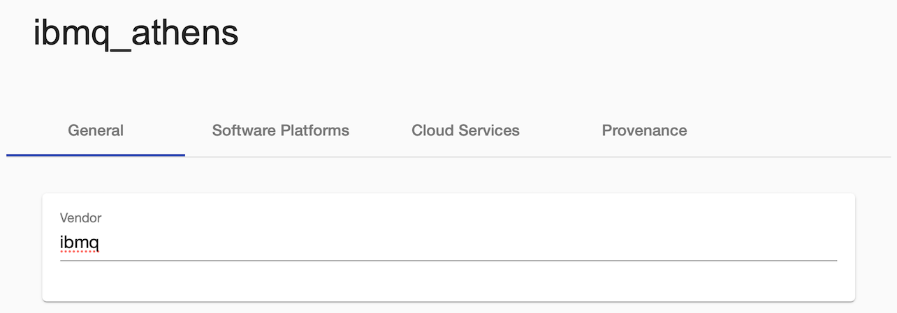
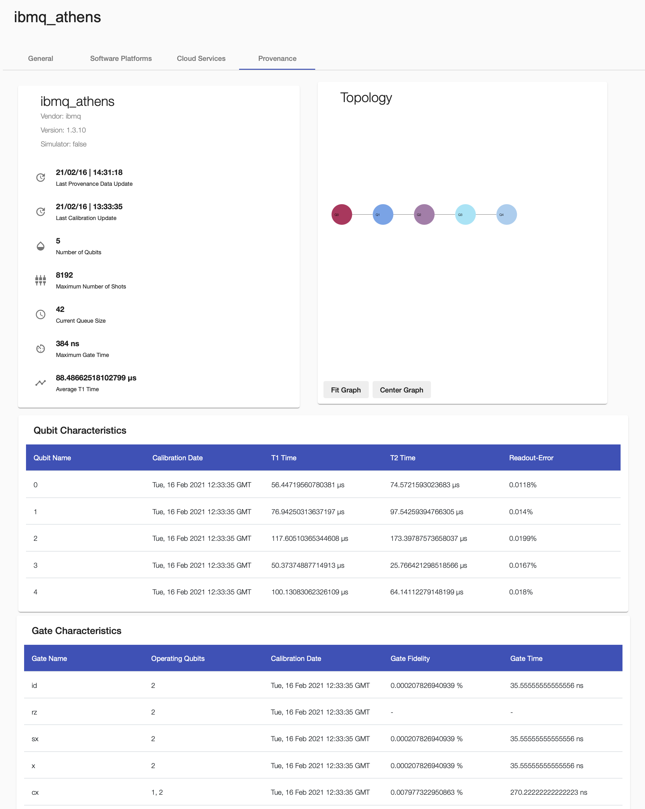

QProv User Guide
QProv is a provenance system for quantum computing. It enables the collection and analysis of important provenance attributes about QPUs. It is, e.g., used by the NISQ Analyzer for the selection of suitable quantum implementations and QPUs and for the comparison of available quantum compilers.
Retrieve Provenance Data of a QPU
To retrieve provenance data of a certain QPU, first set your IBMQ token at the QPROV_IBMQ_TOKEN field and check if QPROV_IBMQ_AUTO_COLLECT is set to true in the docker-compose.
Note
Currently, only quantum computers of IBMQ are supported, thus, in this case, your IBMQ token is required.
Then, add the QPU to the list of Compute Resources under Execution Environments, and define the required QPU name, see Compute Resource.
Then, specify its Vendor under the General tab and click the save button.

Refresh the page and open the Provenance tab.
A great set of provenance data about the topology, metadata, qubits, and quantum gates is displayed.

Calculating the Calibration matrix of a QPU
For calculating the calibration matrices for given QPUs, set QPROV_IBMQ_EXECUTE_CIRCUITS to true. Therefore, the qiskit-service is used.